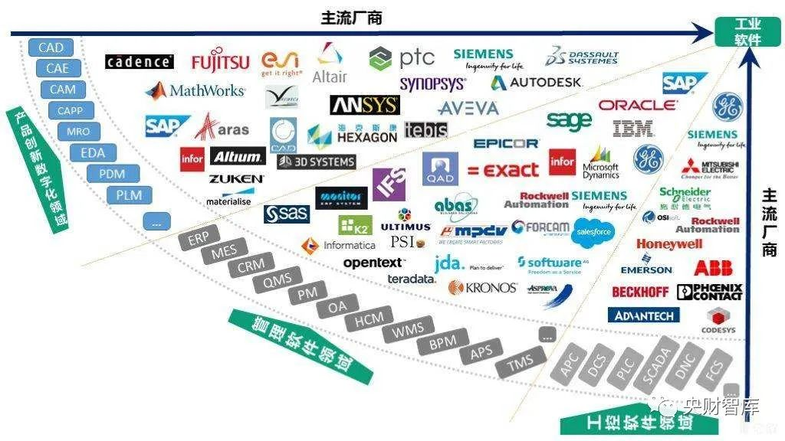
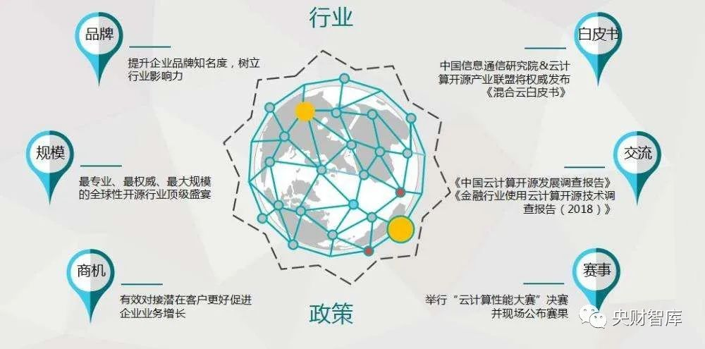
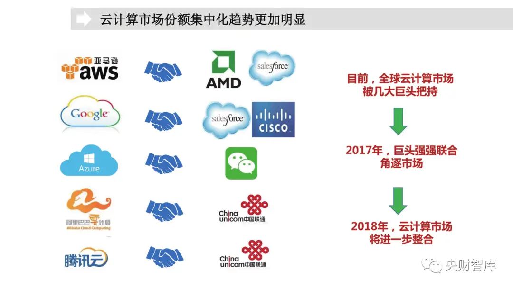
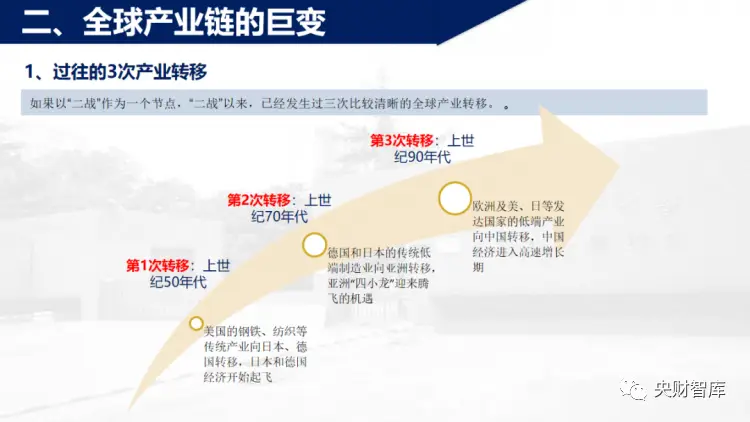
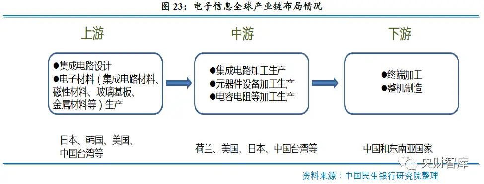

数据库行业分析：从全球IT产业趋势到国产数据库发展之路
一、全球计算产业趋势
——数据中心的重新架构
每隔数十年，新架构重塑数据中心
上一次大规模的数据中心迁移发生在90年代，从 RISC处理器转移到了更低成本的PC衍生X86架构。英特尔凭借着PC市场的规模效应颠覆了相对更高 端的竞争对手。今天，ARM处理器正在利用移动生态系统的规 模来颠覆英特尔。将开源原理应用于硬件， RISC-V也正在凭借低成本侵蚀市场。ARK Invest认为，ARM和RISC-V的组合将从 2020年的0%市场份额上升到2030年服务器市场 的的71%。
英特尔的发展似乎陷入停滞
作为曾经世界半导体制造业的领导者，英特尔似乎 已经失去了方向 ；英特尔将其10nm处理器推迟了4年，使其竞争对手 台积电和AMD的机会在2020年引领市场 ；截至2021年，英特尔仍然没有出货10nm服务器芯 片。而台积电正在大规模生产5nm处理器，比英特 尔领先了整整一代。

到2030年
ARM可以为多数开发用PC提供足够的性能
几乎所有的软件开发人员都在英特尔的x86电脑上编写 代码，运行Windows、Mac或Linux操作系统 ；苹果公司计划在未来两年内将每三个开发者中就有一个 使用的Mac从x86过渡到基于ARM的中央处理器（CPU） ；与此同时，微软正在加倍努力支持ARM处理器上的 Windows；根据ARK的研究，到2030年，大多数开发者的PC可能 由ARM CPU驱动，标志着英特尔x86 时代的结束。
ARM可能成为云计算的新标准
公共云(Public cloud)作为投放新应用程序的默 认平台， 在2020年全球收入达到1400亿美元 ；AWS--世界上最大的公共云供应商--在2020年 推出了Graviton 2 ARM CPU， 减少了其从英 特尔和AMD购买芯片的需求；AWS Graviton 2比英特尔CPU更便宜、更快、 每一美元的性能高出48% ；在未来，AWS可能会把其大部分服务器迁移 到基于ARM的处理器。
到2030年ARM或将成为新的处理器标准
采用ARM处理器的PC和服务器将创建第一个具有足够 规模、丰富工具和供应商支持的生态系统，来挑战英特 尔的x86架构 ；2020年，全球服务器市场约912亿美元，同比增长4.2%， 出货量约1218万台。中国服务器市场出货量为350万台， 同比增长9.8%，厂商收入达到227.5亿美元，同比增长 19.0%；ARM服务器的收入可以扩大100倍，从2020年不到10亿 美元到2030年的1000亿美元，甚至比今天的x86更高的 水平。同时，RISC-V也可以做出非常有意义的贡献；与大型处理机一样，安装X86的电脑市场规模可能会继 续扩大，但其收入可能相比现在会被削减一半。
到2030年，
硬件加速器（Accelerator)或将取代CPU成为主要的服务器计算引擎
如GPU、张量处理单元（TPU）和现场可编程门 阵列（FPGA）等硬件加速器可以执行最大算量的 计算任务，包括人工智能（AI）、数据分析、药 物开发和云游戏。尽管竞争激烈，但我们相信GPU凭借其无可比拟 的可编程性和软件堆栈(Softwaare stack)，在未来 五年内仍将继续主导硬件加速器市场。

二、全球软件产业趋势
——开源软件正在改变IT行业
开源软件正在改变 IT 行业
开源是当今基础软件在全球范围内取得成功最优路径。全球软件应用的四次浪潮：IBM为代表的软硬件一体大型计算机系统；客户端/服务器端系统架构、软硬件分离牵引独立 商业软件迅猛崛起；云计算带来技术架构和软件商业模式变化，并催生一批SaaS、PaaS软件公司；开源带来生态巨大繁荣 和商业模式创新。
过去10年，开源软件商业化能力得到市场正向反馈，企业估值持续高涨。开源软件项目纷纷成立开源软件公司，进入商 业化运营，开源软件开始更多侧重企业级商业化 应用 ；开源软件公司逐渐找到或者创新商业模式，并 被市场和用户所接受认可；庞大的用户基数和生态基础带来开源软件公司 营收的高速成长，叠加创新的商业模式，高成长 高估值。
开源软件市场流行度逐渐超越商业软件。过去10年开源license数据库流行度（一定程度代表使用度）逐步接近商业license数据库。2013年，开源license数据 库流行度/受欢迎程度明显落后于商业license数据库，自2013年以来开源数据库受到市场持续关注追捧，流行度呈现 不断上升趋势。2021年，开源数据库流行度已经超过商业数据库。

云计算也在加速改变软件行业
SnowFlake做对了什么？
技术选择：高性能和拓展性，Snowflake定位于云原生OLAP，并将OLAP传统架构的计算和存储分离，用户可以更灵 活地选择服务级别，而公有云部署方式能够根据需求快速增减节点数量
商业模式：在Snowflake前，OLAP通常是公有云PaaS服务， 而Snowflake做成了支持多云的SaaS产品，简单易用。云 服务一般有两种收费模式：资源预留、包月包年与按量付费。与传统的SaaS公司不同，Snowflake是根据计算量*时长 计费定价的。
销售方式：Snowflake总结自己的Go-To-Market (GTM) 就是针对大企业高层的direct sales，这种销售模式成本高，导致 它的销售占比是在SaaS公司中是最高的。
SnowFlake营收持续增长
SnowFlake上市以来，营收持续翻倍增长，2021Q1-Q3实现营收8.36亿美金，同比增长73.31%，预计今年全年收入达到11.3亿 美金，同比增长103%，公司整体毛利率74%。
三、数据库行业演进
基于提供者和数据存储单元位置/数量的发展路线
数据库发展经历了三个时代：商业数据库时代（商业软件行业）→ 开源数据库时代（互联网）→ 云数据库时代（云企业和 轻型数字化企业）；从数据存储单元位置/数量发展路线演进：单机→集群部署→分布式→ 云原生。
基于数据存储处理类型
结构化数据（关系型/SQL）→ 非结构化数据（非关系型/NoSQL）→异构数据（大数据/多模数据）；图片、语音等非结构化数字的处理量增加带来的产品变化。
云上&分布式数据库成为新秀
从业务需求来讲，数据库是云上应用的关键 一环，数据库作为IaaS+PaaS的核心构件和服 务之一，必须能够满足自身业务和企业级云服 务要求；从技术能力和应用场景来看，互联网公司技 术外溢以及日益增长的高并发高吞吐应用场景， 能够持续拉动数据库系统的日益完善 ；从全球数据库产业格局来看，互联网厂商的 分布式交易型数据库成为产业最大黑马，Ama zon、Alibaba、Google市场份额进入TOP10， Tencent也进入全球TOP15。

四、国产数据库技术路线与发展
国内数据库的四类技术路线
目前来看，在商业数据库市场，我们相对看好基于开源代码重构和类Oracle模式的产品，其中阿里、TiDB主要是基于MySQL 等开源软件重构，华为基于PG（PostgreSQL）重构，头部互联网公司多数基于MySQL。
开源协议限制条件存在差异，
国内首个开源协议木兰诞生
BSD因协议更为友好，选择PG为基础的商业数据库较多。MySQL适应互联网交易型分布式场景，也是互联网/分布式应 用的主流技术路线选择 ；由北京大学牵头，联合华为、BAT和国内知名开源研发团队，众多开源社区与中国开源联盟共同研制而成的中国首个 开源协议“木兰”，也是中国首个国际通用的开源协议。
国内数据库三类商业路径
国内数据库市场，
开源软件和商业软件并存，
开源数据库越来越多，但是最终会走向收敛。
国产数据库推进力：
开源、分布式、云计算、国产化
国内互联网快速发展推动国产数据库前进
开源软件社区（PostgreSQL、MySQL、MongoDB、Hive、Impala等）的快速发展和繁荣，使得国产数据库发展具备了强 大的技术和生态基础；
互联网、头部科技企业的高并发大吞吐业务场景，集群式架构无法满足，促使其自研分布式/云数据库产品以适应业务 高速发展需要，而事实也取得了成功（2019双11在线支付成功峰值达到54万）。
伴随IT架构向分布式迁移以及国产化应用推动，
国产分布式数据库中标和投产应用逐步起势。
国产化需求发展推动国产数据库前进
2014年，微众银行+TDSQL上线，成为分布式数据库在互联网银行核心交易系统的应用首例，1700+台x86服务器，3.46亿+ 日金融交易峰值 ；2018年，华为Gauss OLTP数据库在招商银行综合支付交易系统上线投产， 日均请求量高达8500万， 峰值TPS达到3500 ；2019年，张家港银行+TDSQL，成为分布式数据库在传统银行核心系统应用首例，同等TPS下，硬件成本仅为商业数据库1/5 ；2020年，国产数据库投产应用已经多点开花，基本集中在金融、电信和政务领域，且规模体量及核心业务系统开始增长。传统数据库厂商受益于办公国产化开始全面推广，迎来了业绩翻倍式增长。
国产数据库市占率持续提升
关系型数据库市场，国内产品市占率从 2009 年的 4.2%提升至 2019 年的 18.9%。自 10 年前后提出“去 IOE”和 13 年棱镜 门事件影响后，我国一直在推动国产数据库持续扩张，近 3 年海外四巨头在国内市占率仍维持在 65%以上份额。从国内市场结构看，公有云厂商提供的云数据库产品及服务预计达到一半左右的市场份额。
数据库
——国产化应用中软件投资占比最高的单品
服务器端软件生态链较短，对前端用户透明，云架构下对原有X86架构兼容使得服务器端国产化客观上阻力较小；2021年金融国产化投资中：服务器占据硬件36%的投资额；数据库占据软件57%的投资额。
数据库是竞争最激烈的国产软件赛道
数据库厂商将要面对的现实。 国产产品目录设置了围墙，最凶狠的一批玩家目前还没有进入，随着目录不断扩容、国产化走向深水区、用户关注 产品服务能力，从2022年开始国产数据库真正的战争将拉开大幕。技术路线选择和坚持只是开始，随之而来的是交付实施（系统迁移工具、交付管理平台、产品版本迭代），而生态 和人才的培养是最大短板。稳健是胜出的必要但不充分条件，纯商业市场竞争要求性能好、迁移快、系统稳、低成本和代表性案例。
